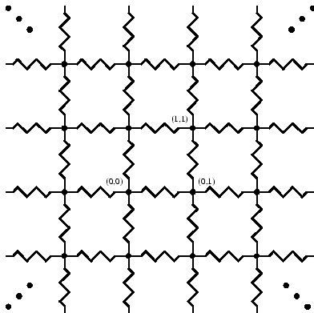

Given an infinite 2D Lattice of resisters as shown below, where the resistance
on each edge between neighboring junctions is exactly 1. Pick any junction O and
assign the coordinate (0,0). What is the total resistance between O and some
other junction J=(i,j)?
Hint: There is a surprising Dynamic Programming solution, but how do you get it to
fit under the memory requirement? :-) .

A number of inputs. One testcase on each line.
The input of each test case is simply the values i, j on a single line.
All values will fit inside an unsigned 64 bit integer.
For each input value, output the total resistance between O and J
on a single line. Round to 3 digits after the decimal.
0 0
0 1
0 2
0 3
0 4
0.000
0.500
0.727
0.861
0.954
Problem setter: Josh Bao
Alternative Solution: Mike Liu